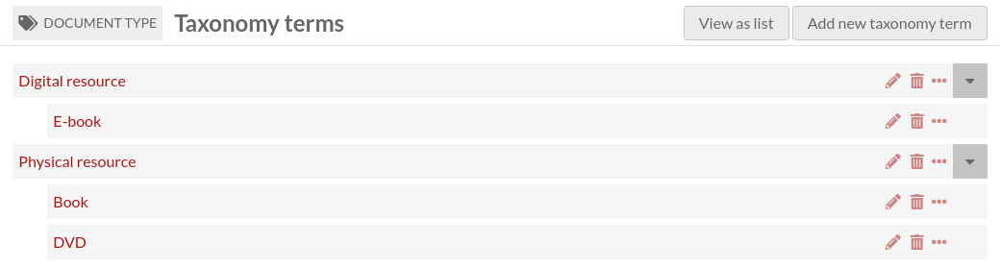
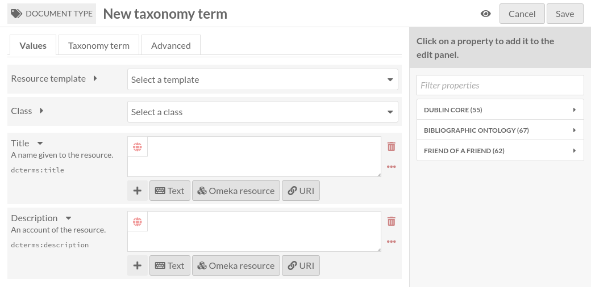
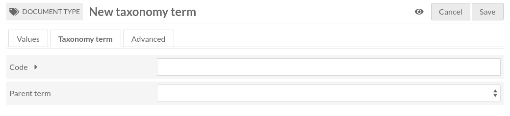
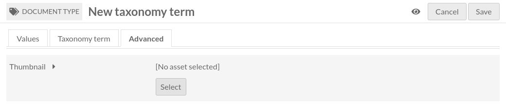

Termes de taxonomie
Un terme de taxonomie est un élément d’un vocabulaire contrôlé. Il appartient à une taxonomie.
Comme une taxonomie, il a un identifiant unique (parmi les termes de la même taxonomie), appelé Code.
Il peut avoir un terme de taxonomie parent. Le terme parent doit appartenir à la même taxonomie. Cela signifie qu’une taxonomie contient une hiérarchie de termes.
Un terme de taxonomie est aussi une ressource Omeka S (comme les contenus, collections et média), ce qui signifie:
il peut être lié à des contenus, collections et média comme n’importe quelle autre ressource Omeka S (il peut être lié dans les annotations également);
il peut être décrit comme n’importe quelle autre ressource (modèle de ressource, classe, propriétés, annotations);
il peut avoir une vignette.
Lister les termes de taxonomie
La liste des termes de taxonomie est accessible de deux moyens différents:
en cliquant sur l’icône d’étiquette dans l’onglet Taxonomies, ou
en cliquant sur le bouton « Voir les termes » en haut de la page de taxonomie
Cette page est très similaire à l’onglet Contenus. Veuillez vous référer à cette documentation pour les informations générales.
Il y a quelques différences:
Il y a une colonne supplémentaire montant le Code du terme de taxonomie.
Les termes de taxonomie peuvent être triées par Code.
Il y a un bouton supplémentaire en haut de la page pour Voir la hiérarchie.
Voir la hiérarchie des termes de taxonomie
Cliquer sur le bouton « Voir la hiérarchie » pour afficher tous les termes de manière hiérarchique
Ajouter un terme de taxonomie
Pour ajouter un nouveau terme de taxonomie, commencer par sélectionner le bouton « Ajouter un nouveau terme de taxonomie ».
Valeurs
L’onglet Valeurs permet de saisir les métadonnées, comme le titre, la description, etc.
Il est identique à l’onglet Valeurs des Contenus.
Terme de taxonomie
L’onglet Terme de taxonomie permet de saisir l’identifiant unique (Code) du terme de taxonomie, et de sélectionner un terme parent.
Avancé
L’onglet Avancé permet de sélectionner une vignette
